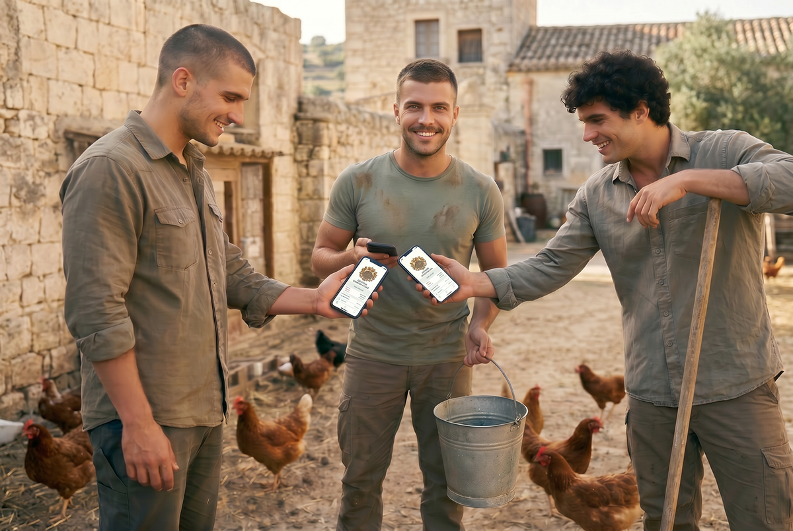
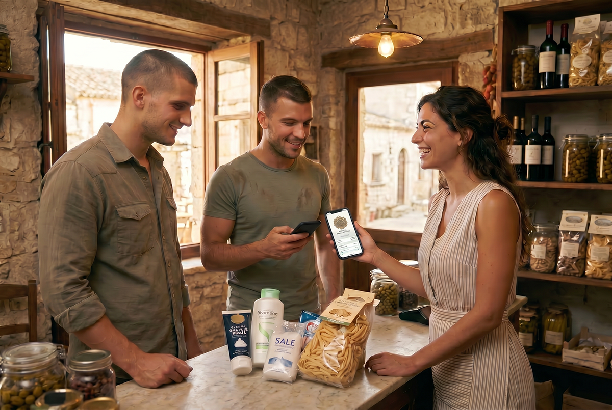
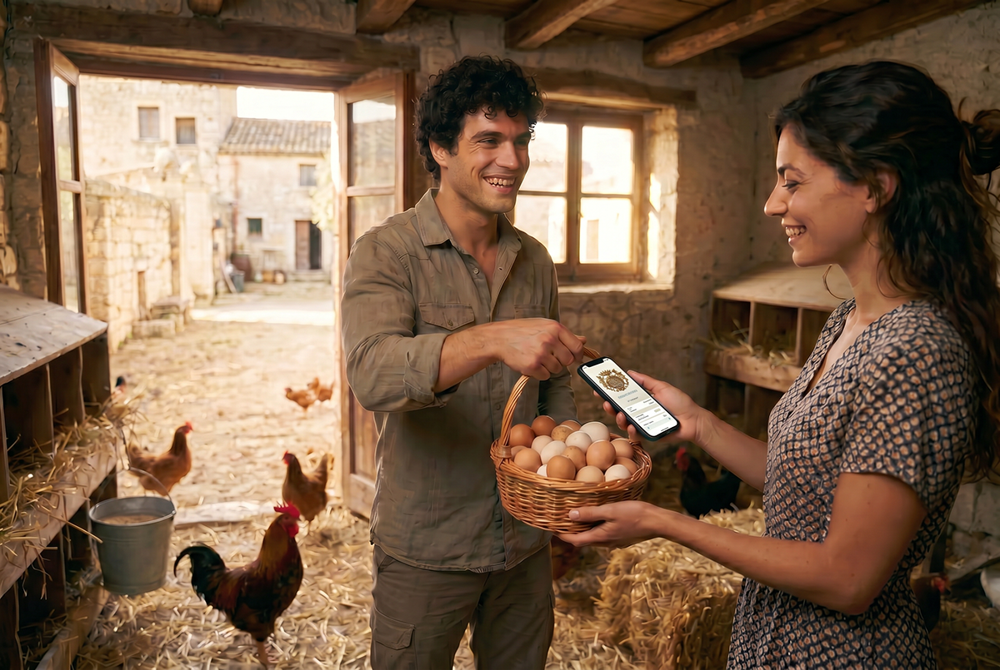
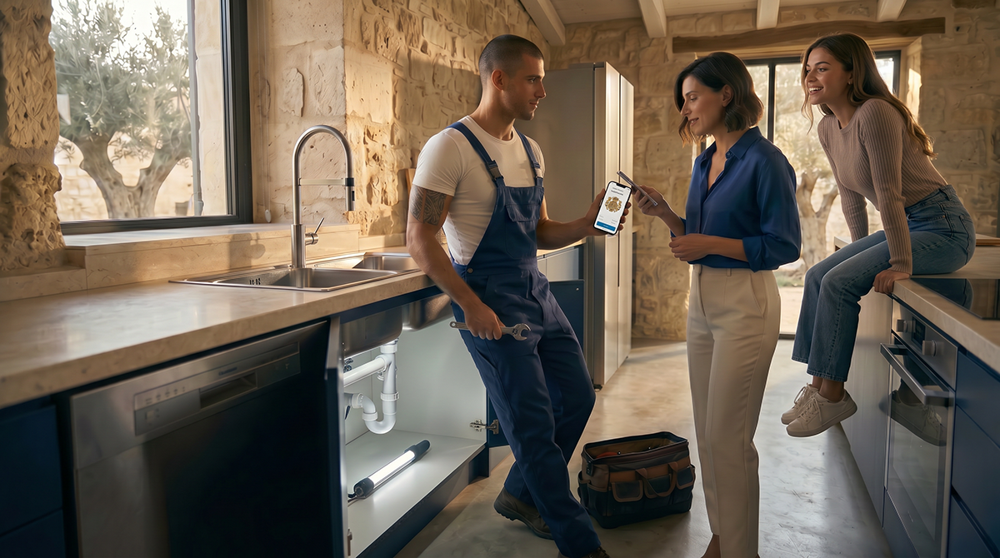
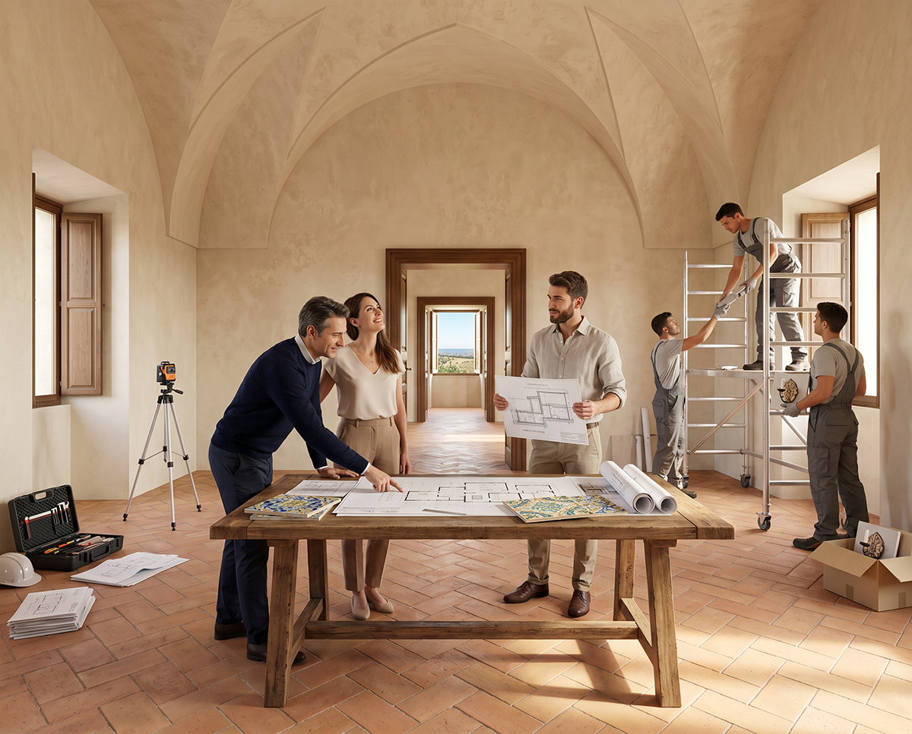
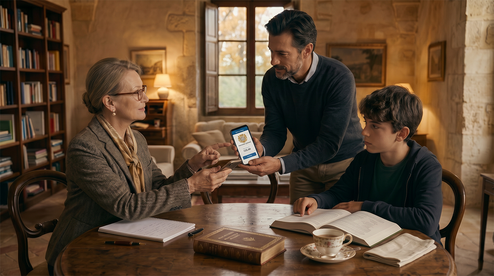

Nel Baglio San Michele vogliamo costruire una comunità in cui l’economia sia al servizio delle famiglie e non il contrario. Per questo abbiamo pensato a un sistema semplice di crediti interni, che in futuro potrà essere gestito anche in forma digitale (tokenizzata).
Non si tratta di una moneta speculativa o di un investimento finanziario. È uno strumento concreto di reciprocità: chi dà tempo, lavoro e competenze alla comunità riceve in cambio valore che può utilizzare all’interno del Borgo.
Come funziona, in parole semplici
Immagina un grande “libro mastro” di famiglia condiviso da tutti i residenti.

Quando contribuisci, accumuli crediti
Ogni ora di lavoro o servizio reso alla comunità viene riconosciuta e trasformata in crediti. Questo vale per le famiglie che vivono stabilmente nel Borgo, ma anche per chi lavora al Baglio senza risiedervi (artigiani, agricoltori, tecnici o collaboratori esterni). Nei campi, nei laboratori, nella cura delle persone, nella manutenzione degli spazi o nell’insegnamento di un mestiere: ogni contributo concreto viene valorizzato.

Quando hai bisogno, spendi i crediti
I crediti possono essere utilizzati per acquistare i prodotti della masseria e della Cooperativa, come olio, formaggi, ortaggi freschi, pane e conserve, senza alcun ricarico. È possibile spenderli anche per pagare servizi offerti da altre famiglie o da chi lavora nel Borgo.

Tutto resta all’interno della comunità
I crediti nascono principalmente dal lavoro e dai servizi offerti alla comunità. Allo stesso tempo, è possibile acquistare token con euro per partecipare al progetto. Il valore del sistema resta ancorato alla reciprocità, al contributo concreto e alla fiducia tra le persone.
In futuro questo sistema potrà essere gestito in modo ancora più semplice e trasparente attraverso una piccola applicazione sul telefono.
Perché lo facciamo

Questo modo di fare economia porta vantaggi concreti:
Prezzi più stabili e accessibili
I prodotti e i servizi interni restano più convenienti, senza ricarichi speculativi.
Ogni contributo viene valorizzato
Non conta solo il lavoro “produttivo”, ma anche la cura, l’insegnamento e il sostegno tra famiglie.
Maggiore autonomia
La comunità diventa meno dipendente dai mercati esterni e più resiliente.
Legami più forti
Ogni transazione è anche un atto di reciprocità e di vicinanza tra le persone.
È un modello ispirato alla tradizione siciliana delle comunità rurali e ai valori cristiani di condivisione e responsabilità reciproca.
I crediti e il futuro del Borgo
Il sistema dei crediti interni potrà essere utilizzato anche per le scelte più importanti legate al Borgo. Chiunque creda nella visione del Baglio San Michele e del Borgo Ideale potrà acquistare dei token del progetto.

Per l’acquisto di un appartamento
Le famiglie che verranno selezionate per vivere stabilmente al Baglio San Michele potranno utilizzare i token acquistati (o accumulati attraverso il proprio impegno nella comunità) come parte del pagamento dell’unità immobiliare.

Per investire nel progetto
I token potranno essere utilizzati anche per sostenere lo sviluppo del Baglio e dei futuri Borghi della rete, contribuendo alla realizzazione di nuove abitazioni, laboratori e spazi comuni.
Chi decide le regole

Le regole del sistema vengono definite dal Capitolo dei Savi della comunità, l’organo di governo interno ispirato alla tradizione delle comunità rurali siciliane.
Tutto viene fatto con trasparenza, nel rispetto dei valori del Borgo Ideale: la centralità della famiglia, la bellezza del luogo, l’autonomia e la reciprocità cristiana.
Vuoi saperne di più o partecipare?
Il sistema dei crediti è ancora in fase di definizione e verrà sviluppato insieme alle prime famiglie che sceglieranno di vivere al Baglio San Michele.
Se desideri approfondire, scrivici.